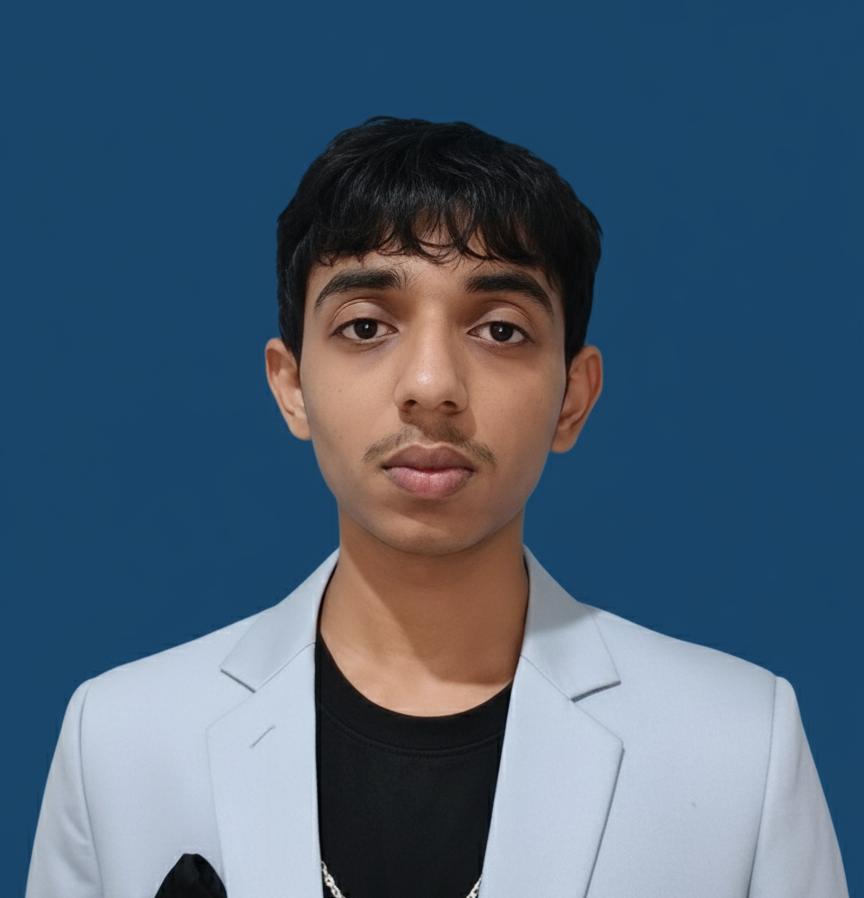

I'm Kaushik — final-year AI & Data Science engineer. I build full-stack systems and ML pipelines, then obsess over getting the fundamentals right.

I'm a final-year B.Tech student in Artificial Intelligence & Data Science at C.V. Raman Global University, Bhubaneswar. Most of my work sits at the intersection of applied ML and full-stack engineering — I like taking a system from schema design to a trained model to a UI someone can actually click through.
Outside coursework, I compete on LeetCode and spend a lot of time rebuilding things from scratch on purpose — right now that's a DSA tracker, built class-by-class to nail down OOP fundamentals and separation of concerns before adding features.
Modular agent workflow using graph-based orchestration, with natural language instruction parsing, automated browser actions, and failure reporting.
A full-featured dealer CRM built during an internship — contacts, lead pipeline, car inventory, test-drive scheduling, and after-sales service reminders, with a custom dark steel / Tata blue interface.
A ground-up rebuild of a coding-practice tracker, built class-by-class to strengthen OOP fundamentals — clean separation of concerns between data, logic, and presentation layers.
Open to Software Engineer (New Grad) roles. Reach out — I reply fast.